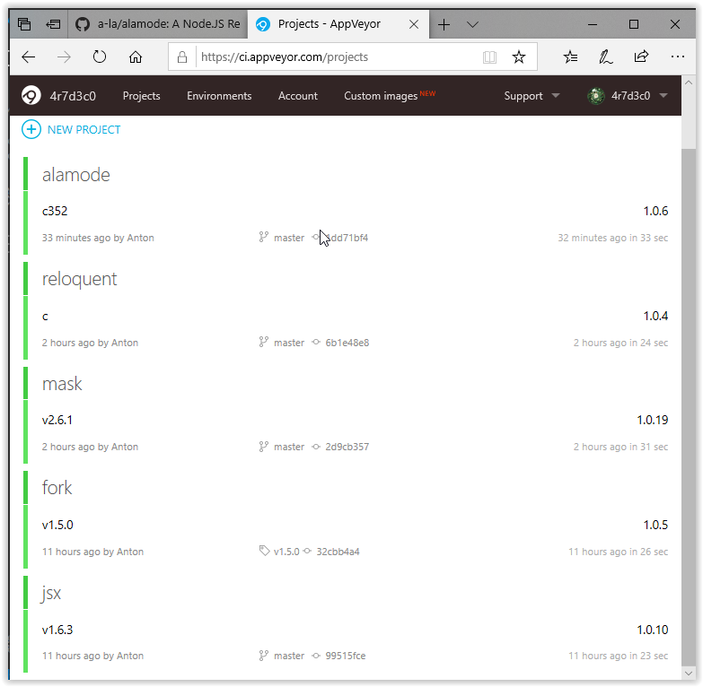
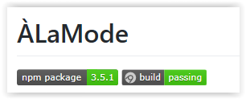
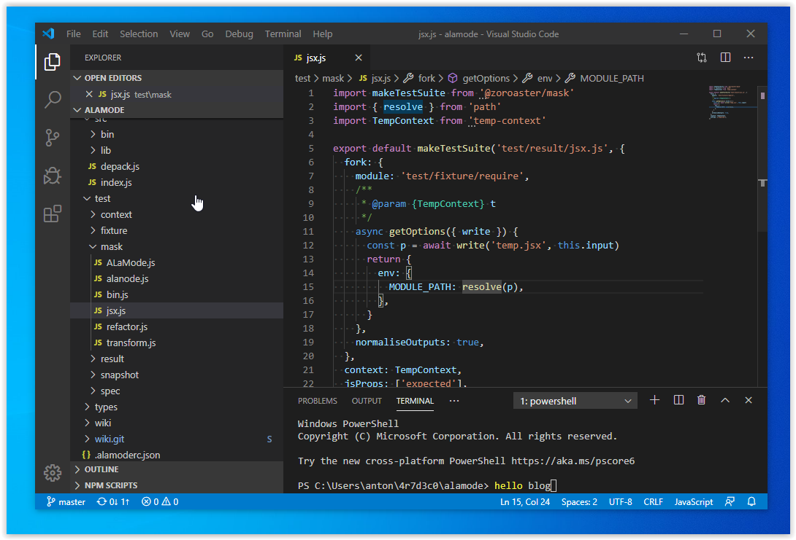

During working on packages on windows, I cloned my Documentary widgets for the user directory, and the README wasn't compiling as JSX was failing. Therefore, found out about non-working JSX transpilation on Windows, and had to fix it. Pretty crucial so it's really good to keep a secondary Windows system for development just to make sure that the packages are truly cross-platform. JSX was fixed, and merged into ÀLaMode. A lot of tests in ÀLaMode and masks had to be updated to be cross-platform too. This typically involves normalising forks' outputs and snapshots outputs also. Apveyor by default will clone the repo using `input` crln, but my config is `auto` therefore the tests were failing for _Zoroaster_, as mask results are extracted using EOL which isn't robust. For now, the ``auto`` strategy is good enough, but when `\n` is encountered on Win, instead of `\r\n`, mask will fail.
Discovered a bug with FindPackageJSON also, which traverses paths up to root to find the location of a package. This was getting stuck in an infinite loop as the root was assumed to be `/` which is wrong on Win (e.g., `C:\` is expected instead). This made _Documentary_ as well as _Depack_ freeze without any error message which isn't great. There's a very large number of Windows users therefore testing software on Win is absolutely essential. Just a few weeks ago, I was still using Node 8 and most of my packages were not working on Node 12 :facepalm: It was due to the Node's API being changes so that some functions were not accepting as many args as documented, whereas my package `makepromise` was checking if too many arguments were passed, and "Function doesn't accept that many arguments" were thrown A LOT. That probably alienated some people from using packages, and I learned a lesson: to setup CI for Windows + test matrix for Node 8 + 12. Even if _I_ stay on Node 8 on Mac, there are people who run Node 12 on Win. It's been known that `console.log` prints a `\n` and not _EOL_ after the logged string. But another interesting observation is that template strings also always print `\n` regardless of the platform: ```js const t = `hello world` ``` Counter-intuitive, even if the file is saved on a Windows machine, it the new line here is still `\n` and not `\r\n`. +1 to interview questions list ;) A lot of time today was spent on testing readline interface as well as forks can accept inputs, and the way I was testing it before, was just by writing questions to `process.stdout` and then pushing answers to `process.stdin`. That was totally fine on Mac, but on Windows, it's buggy. You need to create separate readable and writable streams for each new question, otherwise Node will freeze if trying to do this through the main process's streams. It can work one time but then stop working for all next times when asking questions. I've updated ``reloquent`` so that a question now extends _ReadlineOptions_ which means that for testing, I can be passing new streams, e.g., ```js import { askSingle } from 'reloquent' const output = new Catchment() const q = askSingle({ text: 'My girl, Where did you sleep last night', output, input: new Readable({ read() { this.push('in the pines \n') // => answer this.push(null) }, }) }) output.promise // => My girl, Where did you sleep last night ``` This also unloads logging from the main console when writing tests. A disadvantage is that if my API for ``reloquent`` supported a simple string as a question, I'll be passing an object instead so that I'm not covering the string feature any more. This can result in errors. So it's good to have another tests covering simple strings, but it's impossible... The solution is to create a fork and write to its stdin via a separate process. This will ensure 100% test coverage. Likely with Zoroaster's mask testing it's really easy to do. Also _Documentary_'s forks can be used to combine this feature with documentation generation.
### TODO - `normaliseOutputs` to fully replace all newlines, as currently the regex is `[^\r]\n` -> EOL but this doesn't work for 2 consecutive new lines like `\r\n\n`. - Update ``temp-context`` to create cross-platform snapshots, as the paths are written using a system separator which is annoying and requires to update paths manually. - Handle `\n` without `\r` on Windows for mask results extraction. - Fix _Documentary_ and _Depack_ for FPJ on Windows.